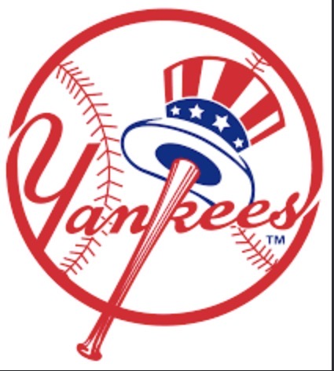

NLCS GAME 2
NLCS GAME 2
Brewers Power Past Dodgers 7-4 to Take 2-0 NLCS Lead
Milwaukee exploded for four runs in the 6th inning at American Family Field to take a 2-0 championship series lead heading to Los Angeles.
Read Full Report on MLB.com ↗Real-time live scoreboards, advanced AI championship simulation, interactive 12-team playoff bracket, broadcast schedules, fan MVP voting, and 30 team hubs.
Algorithmic analysis of remaining LCS matchups, pitching depth, rotational ERAs, and championship probabilities.
Algorithmic Forecast: Milwaukee's 103-win season, combined with an untouchable back-end bullpen (1.12 ERA in October) and home-field advantage, gives them the highest likelihood of winning the Fall Classic. Holding a 2-0 NLCS lead over Los Angeles, Milwaukee needs just two wins to punch their ticket to the World Series.
Model Prediction: Dodgers favored at home (52% win probability) behind Yoshinobu Yamamoto, but must overcome a 0-2 series deficit against Milwaukee's elite pitching staff.
Model Prediction: Series tied 1-1. Tampa Bay holds a 54% edge shifting to Progressive Field due to rotation depth and high-leverage bullpen matchups.
Cast your vote and see real-time community percentages saved live.
Synced with ESPN stats engine.
Top individual statistical performers in the 2026 Postseason.
Real-time coverage from MLB.com, ESPN, and FOX Sports.
NLCS GAME 2
Milwaukee exploded for four runs in the 6th inning at American Family Field to take a 2-0 championship series lead heading to Los Angeles.
Read Full Report on MLB.com ↗ METS FEATURE
METS FEATURE
Evaluating Juan Soto's massive impact in his first year with the Mets following his record-breaking 15-year, $765 million contract.
Read Soto Feature on ESPN ↗
ALDS RECAPTampa Bay held Aaron Judge and the New York offense to six total runs across three games to secure an ALDS sweep.
Read Breakdown on FOX ↗